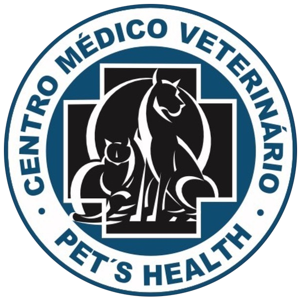

PET'S HEALTHNo Centro Médico Veterinário Pet's Health, a saúde do seu melhor amigo é tratada com excelência, tecnologia e muito carinho. Tudo em um só lugar.
Falar com AtendimentoCom anos de experiência prática e milhares de vidas transformadas, nossa equipe alia o conhecimento de quem realmente entende de medicina veterinária a uma estrutura completa e acolhedora.
Não somos apenas uma clínica, somos o seu porto seguro no bairro. Nosso compromisso é oferecer um atendimento humanizado, focado na prevenção, no diagnóstico preciso e na recuperação rápida do seu pet.
Consultas de rotina, check-ups e acompanhamento contínuo para garantir a longevidade e qualidade de vida do seu pet.
Infraestrutura moderna e esterilizada, pronta para atender desde procedimentos de rotina até intervenções complexas.
Utilizamos anestesia inalatória, o padrão ouro em segurança, garantindo um despertar suave e riscos minimizados.
Acompanhamento humanizado e intensivo. Seu pet recebe atenção total até estar pronto para voltar para casa.
Limpeza de tártaro completa, evitando infecções, mau hálito e problemas cardíacos decorrentes do acúmulo.
Maior conveniência para você sair da consulta com a medicação exata, garantindo o início imediato do tratamento.
Localização privilegiada e de fácil acesso para você e seu pet na Vila Mascote.
R. Eng. Jorge Oliva, 466
Vila Mascote, São Paulo - SP
04362-060
(11) 5031-1345
(11) 99898-7721